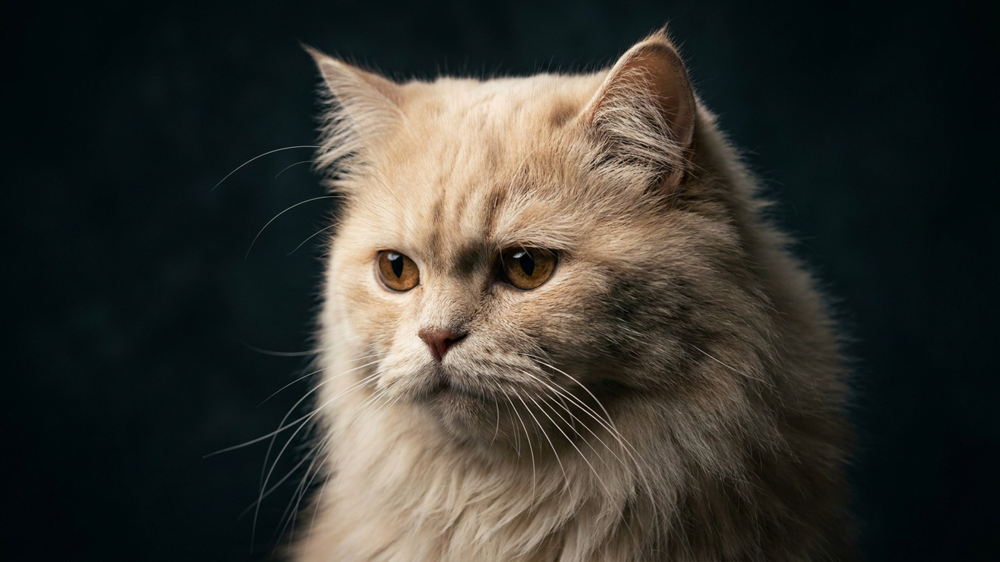

У персидской кошки под глазами почти всегда тёмные дорожки — и большинство хозяев привыкают к этому как к норме. Это не совсем так: интенсивность выделений зависит в том числе от того, как и как часто вы ухаживаете за мордочкой. Ниже — простой ежедневный ритуал, который держит мордочку чистой, а шерсть — без колтунов.
🐾 Дневник здоровья питомца — в кармане
Вес, прививки, симптомы и напоминания в одном приложении. AnimaLife следит за здоровьем питомца вместо вас.
Строение черепа персидской кошки устроено так, что слёзные каналы проходят по более изогнутому пути, чем у кошек с обычной мордочкой. Слёзная жидкость не успевает полностью уходить через канал и выходит наружу — по шерсти под глазами. Это анатомическая особенность породы, а не признак того, что кошка больна.
Проблема в другом: влажная шерсть — среда для накопления грязи и размножения бактерий. Если не протирать область вокруг глаз регулярно, дорожки темнеют, кожа под ними раздражается, а запах усиливается. Ежедневная чистка решает это быстрее, чем любые другие меры.
Всё, что нужно: ватные диски или мягкие салфетки без отдушек, тёплая кипячёная вода или специальный лосьон для ухода за областью глаз у кошек (его подбирает ветеринар под конкретную кошку).
Шерсть персидской кошки не сваливается за один день — колтуны формируются постепенно, начиная с мест трения: подмышки, за ушами, на шее под ошейником, в паховой области. Расчёсывать нужно ежедневно, а не раз в неделю «когда уже запущено».
Ежедневный уход — это ещё и осмотр. Вот изменения, при которых стоит обратиться к специалисту:
Эти сигналы — повод не откладывать визит. Ветеринар осмотрит слёзные каналы и кожу, при необходимости подберёт уходовые средства или направит к офтальмологу.
🐾 Не уверены, что это опасно?
Опишите симптом в AnimaLife — AI-ветеринар за минуту подскажет, что в пределах нормы, а когда пора к врачу.
🐾 Понравился разбор?
Подпишитесь на канал — каждый день разбираем по одному тревожному симптому у кошек и собак: что в пределах нормы, а когда пора к врачу. Подпишитесь, чтобы не пропустить разбор, который может спасти здоровье вашего питомца.